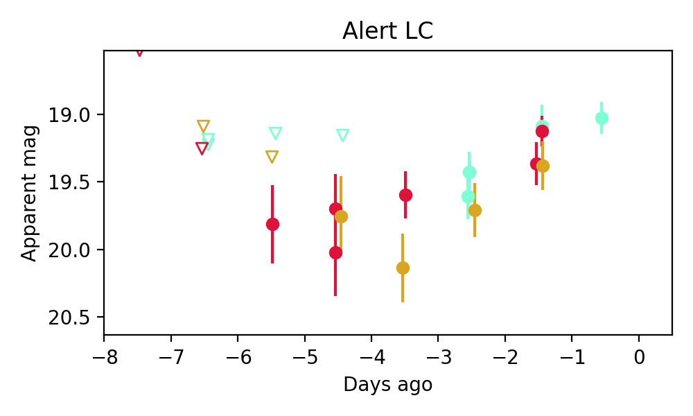
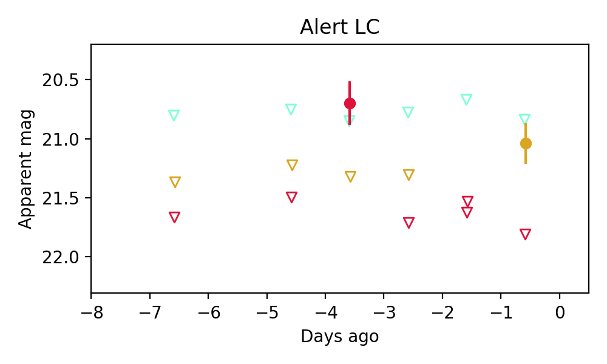

Candidate List 20250912Previous Day Next Day
Section 1: New Sources (age<1d) Section 2: Old (1-5d) sources observed last nightplaceholder
Section 1: New Afterglow/FBOT Cands Last Night (0)
Section 2: Older Sources Observed Last Night (2)
0. ZTF25abptfih (FBOT?) [Back to Top] [Share] [Trigger Swift] [Fritz] [Lasair]RA, Dec: 304.87411, -22.56864 20h19m29.79s, -22d-34m-7.10sGalactic (l, b): 20.81882, -28.88549 WARNING: -2.91 deg from ecliptic plane ext(g-r) = 0.09
PS1: 1 source in 3 arcsec Closest: d = 2.72 arcsec photoz=0.09+/-0.05 peak abs mag = -19.51
LegacySurvey: 0 sources in 3 arcsec

Extinction-corrected gr color:
From alerts: -0.21 +/- 0.19 mag
Extinction-corrected gi color:
From alerts: -0.43 +/- 0.24 mag
Extinction-corrected ri color:
From alerts: -0.22 +/- 0.2 mag
Rise Rate:
g: 0.25 mag/day
r: 0.18 mag/day
i: 0.05 mag/day
Fade Rate:
g: -99 mag/day
r: -99 mag/day
i: -99 mag/day
1. ZTF25abqcsee (Afterglow?) [Back to Top] [Share] [Trigger Swift] [Fritz] [Lasair]RA, Dec: 237.2021, 35.72818 15h48m48.50s, 35d43m41.43sGalactic (l, b): 57.12909, 51.53352 ext(g-r) = 0.021
SDSS (10 arcsec):Found SDSS phot-z: z=0.68; peak abs mag = -22.49
PS1: 0 sources in 3 arcsec
LegacySurvey: 1 sources in 3 arcsec Closest: d = 2.72 arcsec, 274.2 deg (east of north) photoz=0.6 (68% bounds 0.46, 0.8), type=REX peak abs mag = -22.1 (68% bounds -21.42, -22.86)

Extinction-corrected gr color:
From alerts: 0.13 +/- 99 mag
Extinction-corrected gi color:
From alerts: -0.23 +/- 99 mag
Extinction-corrected ri color:
From alerts: 0.76 +/- 99 mag
Rise Rate:
g: -99 mag/day
r: 0.8 mag/day
i: 0.05 mag/day
Fade Rate:
g: -99 mag/day
r: 1.02 mag/day
i: -99 mag/day